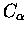

The structure comparison algorithm of Argos & Rossmann
[3], which is the method used by STAMP, requires that the
protein structures being compared are approximately superimposed
initially. If not then structural similarity may be undetected, and
reliable superimpositions and alignments unattainable. This is a very important
thing to remember of STAMP. If initial superimpositions do not yield high
enough scores (i.e.
Sc < 2.0) or if the structures are generally different,
STAMP will warn you with `LOW SCORE'.
The STAMP package provides three methods of arriving at an initial
superimposition. The first of these is to make use of an alignment
derived on the basis of sequence. The program ALIGNFIT requires
that the sequences extracted from the PDB files (using the program
PDBSEQ) are aligned vertically in AMPS block format (see format and
examples below); one may use AMPS or another method of aligning sequences
(provided one has first converted the alignment to the AMPS format;
two programs to do so are included in the distribution: one converts CLUSTAL
format, the other MSF format).
The program compares all possible pairs of
structures by performing a least squares fit on all equivalenced

atoms. Once all pairwise comparisons are compared, the
program makes use of a tree to superimpose multiply all
coordinates following the tree. Thus the final superimposition
output is the best possible fit of the structure given the
alignment. For an example where ALIGNFIT is used to provide an
initial superimposition, refer to the alignment of the serine
proteinases Chapter 2. AMPS can be obtained from GJB.
In instances when multiple sequence alignment is inaccurate,
ALIGNFIT may still be used, though the initial superimpositions may
not be accurate enough for STAMP to find structural similarity.
It is possible to skip the use of a multiple sequence alignment by
using the ROUGHFIT option within STAMP. This option generates an initial
alignment which simply consists of the sequences from
each domain aligned from their N-terminal ends. This works well in
cases where the lengths of the domains to be aligned are similar,
and when they exhibit good structural similarity, but will often
fail to provide a good starting point. See the alignment of the
globin structures in Chapter 2 for an example of using ROUGHFIT.
By far the best way to arrive at initial superimpositions is to use
the SCAN option within STAMP. One must merely select a domain with
which to scan the other domains to be superimposed.
One can obtain (by SCAN and after running SORTTRANS, and
removing other redundancies) a set of
superimpositions for all other domains onto the domain used to scan.
This provides an excellent and accurate starting point from which to
begin a multiple structure based alignment by STAMP. This works
particularly well when structures are very diverse. For an
example, see the alignment of the aspartyl proteinase N- and C-
terminal lobes in Chapter 2.